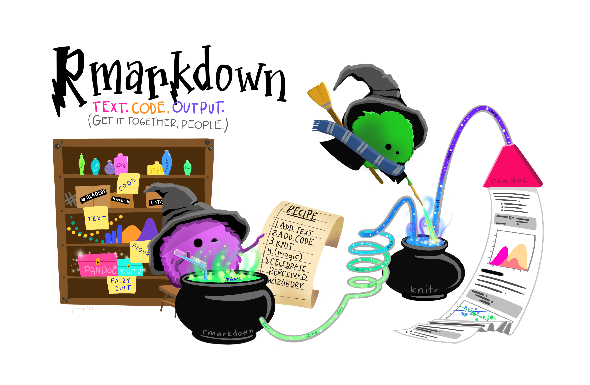
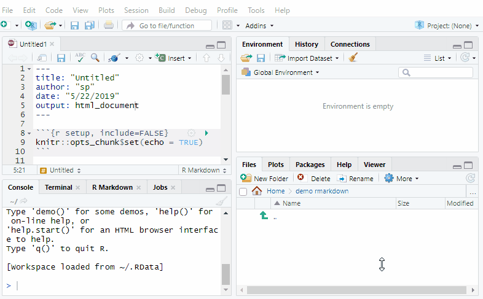

?rmarkdown::word_documentDocumentos Reproducibles con Rmarkdown
Introducción
En este tutorial vamos a aprender a crear documentos dinámicos y reproducibles con R y Rmarkdown (Rmd)(Figura 1). Vamos a trabajar con R, Rstudio (ahora llamado posit), y utilizaremos al menos el paquete rmarkdown.
Para la realización de este tutorial hemos utilizado recursos de diferentes fuentes. En el apartado Recursos se encuentran listados todos los que se han utilizado.

Rmd. Fuente: @allison_horst1 Flujo de Trabajo
- Crear archivo
.Rmd - Escribir encabezado YAML
- Escribir texto y código
- Renderizar (
Knit)

1.1 Crear un archivo .Rmd
Dentro de R-Studio, haz clic en Archivo → Nuevo archivo → Rmarkdown (Figura 2).
RmdRmdRmd2 Estructura de un archivo Rmd
2.1 Encabezado YAML
YAML1, es un lenguaje de serialización de datos para todos los lenguajes de programación. Se diseño para representar datos jerárquicos pero que sea fácil de escribir y leer por humanos.
El encabezado YAML presenta estructura de lista anidada y contiene diferentes metadatos del documento (como el título del documento, el autor, los formatos de salida, etc). Todos estos argumentos quedan delimitados por tres guiones --- al inicio y al final (a modo de bloque).
Existen diferenes parámetros que se pueden especificar en el encabezado YAML, que van a definir algunas características del documento.
title: Título del documentoauthor: Autor del documentooutput: Formatos de salida del documento (pdf,word,html, etc). Mas información aquídate: Fecha del documento
Algunos parámetros van a estar condicionados por el tipo de formato de salida. Por ejemplo:
toc:trueMostrar la tabla de contenidos cuando la salida sea de tipo html.- También podemos especificar una plantilla de word.
---
output:
word_document:
reference_docx: "template.docx"
---Existen diferentes formatos de salida de documentos. En el ejemplo (Figura 3) hemos usado html, pero podemos especificar diferentes formatos de salida (word, pdf, presentaciones, etc.). Cada tipo de documento de salida presenta diferentes parámetros que se pueden especificar en la cabecera YAML. Por ejemplo, para saber qué parámetros puedes definir con html_document, podemos usar el comando ?rmarkdown::html_document. Así, por ejemplo:
word_document(
toc = FALSE,
toc_depth = 3,
number_sections = FALSE,
fig_width = 5,
fig_height = 4,
fig_caption = TRUE,
df_print = "default",
highlight = "default",
reference_docx = "default",
keep_md = FALSE,
md_extensions = NULL,
pandoc_args = NULL
)2.2 Narrativa (Texto del documento)
Esta parte del documento se utiliza para describir diferentes aspectos de nuestro trabajo: el resumen, una introducción, la motivación del trabajo, metodologías, resultados, etc. En un documento .Rmd todo lo que no esté en el encabezazo YAML o dentro de un chunk de código, será interpretado como texto.
Para escribir la parte narrativa se utiliza el lenguaje Markdown, que no es mas que una colección simple de convenciones para dar formato a archivos de texto plano. Está diseñado para que sea fácil de leer, de escribir y también de aprender. En la siguiente tabla tienes algunos ejemplos de como es la sintáxis markdown.
| Formato | Sintáxis | Ejemplo |
|---|---|---|
| Cursiva | *Texto* |
Esto es cursiva |
| Negrita | **Negrita** |
Esto es negrita |
| Link | [Descripción del texto\](url) |
Un link |
| Imágenes |  |
Una imagen |
Para crear encabezados de secciones y subsecciones has de utilizar el simbolo #. De tal forma:
# Título
## Sección principal
### Subsección
#### Sub-subsecciónTambién se pueden incluir superíndices escribiendo R^2^ lo que produce R2, o subíndices, escribiendo CO~2~ que produce CO2.
A veces puede interesarnos escribir ecuaciones. Para ello vamos a usar el lenguaje LaTeX. Existen algunos editores online que nos permiten escribir ecuaciones usando LaTeX, como por ejemplo este.
Las ecuaciones pueden incluirse en la misma línea, para lo cual incluimos la ecuación entre simbolos $...$. Por ejemplo:
En nuestro estudio utilizamos una regresión de acuerdo a \(y_i=a_i+b_iX\).
Para obtener esta ecuación hemos escrito $y_i=a_i+b_iX$
También podemos incluir ecuaciones mas complejas en párrafo aparte usando $$...$$. Por ejemplo para obtener \[y = \mu + \sum_{i=1}^p \beta_i x_i + \epsilon\]
escribimos $$y = \mu + \sum_{i=1}^p \beta_i x_i + \epsilon$$
Existen muchos recursos en la web sobre sintáxis markdown. Por ejemplo aquí o aquí puedes encontrar una lista completa de la sintáxis markdown
2.3 Trozos de código
Los trozos o bloques de código (chunks) dentro de un documento RMarkdown permiten ejecutar diferentes análisis y mostrar resultados en el documento final. Para distinguir los trozos de código del resto de elementos del documento .Rmd tenemos que indicar un tipo especial de marca.
Existen dos formas de incrustar código dentro de un documento .Rmd:
Código en línea: Código breve que se incluye en una línea escrita del documento (generalmente no mas de una línea de código)
Bloques de código (
chunks): Partes del documento que incluyen varias líneas de código. Permiten represantar gráficos, tablas, aplicar análisis estadísticos, cargar paquetes, etc.
2.3.1 a. Código R en línea
Para incluir código en líneas hay que utilizar la siguiente sintaxis `r `, en la que incluiremos nuestro código después de la letra r. Por ejemplo si escribimos: la media de nuestro grupo es `r mean(c(1,3))`, aparece como: la media de nuestro grupo es 2. De esta forma podemos incluir resultados de análisis (e.g. p.valor de un análisis) sin tener que copiarlos a mano, reduciendo la generación de errores.
2.3.2 b. Bloques de código (chunks)
Los trozos de código se pueden utilizar para representar la salida del código en los documentos o para mostrar el código para la ilustración. Los trozos de código pueden estar escritos en diferentes lenguajes (e.g.: shell/bash, python, SQL, R, etc.)
Los bloques de código
Para insertar un trozo de código en R, puedes escribirlo manualmente escribiendo ```{r} seguido de ``` en la siguiente línea. Esto producirá el siguiente fragmento de código:
n <- 5
seq(n)[1] 1 2 3 4 5Knitr interpreta ese trozo de texto como instrucciones de R, las ejecutará y mostrará los resultados como parte del documento.
En la siguiente animación (Figura 4) puedes ver la anatomía de un trozo de código.
Existen varias formas de insertar un chunk de código:
- Usando “Insert” en la barra de Edición
- Escribiendo manualmente
```{r}y``` - Usando un atajo de teclado:
- Ctrl + Alt + I (Windows)
- Cmd + Alt + I (OS)
2.3.3 Opciones y nombres de los bloques
Cuando creamos un documento reproducible es importante identificar los diferentes trozos de código para poder ejecutarlos a lo largo de todo el documento. Esta aproximación tiene varias ventajas:
- Se puede navegar mas cómodamente a los bloques específicos usando el navegador de código desplegable abajo a la izquierda en el editor de script:

En caso de que el bloque de código produzca un gráfico, se usará el nombre del bloque para nomobrar los gráficos facilitando la reutilización de estos gráficos.
Guardar bloques específicos de código complejo y costoso de ejecutar en la caché.
En nuestro ejemplo anterior podemos añadir el nombre del chunk como 1-numero-aleatorio:
```{r 1-numero-aleatorio}
n <- 5
seq(n)
```[1] 1 2 3 4 5Las salidas de los códigos pueden personalizarse con diferentes opciones. Estas opciones se suminustran para cada uno de los chunks. Existen mas de 50 opciones de personalización que pueden ser consultadas aquí. Las principales son:
eval = FALSEevita que el código sea evaluado. (Y, obviamente, si el código no es ejecutado no se generaran resultados). Esto es útil para mostrar códigos de ejemplo, o para deshabilitar un gran bloque de código sin comentar cada línea.include = FALSEejecuta el código, pero no muestra el código o los resultados en el documento final. Se puede usar para aligerar el aspecto final de nuestro documento.echo = FALSEevita que se vea el código, pero sí muestra los resultados en el archivo final.message = FALSEowarning = FALSEevita que aparezcan mensajes o advertencias en el archivo final.esults = 'hide'oculta el output impresofig.show = 'hide'oculta los gráficos producidoserror = TRUEpermite que se siga renderizando el documento a pesar de que exista un error en el código. Puede ser útil durante el proceso de creación de un documento reproducible
2.3.4 Incluir Tablas
Un aspecto muy intersante de los documentos reproducibles es la inclusión de tablas. Para incluir una tabla existen diferentes opciones, siendo la función knitr::kable la que nos permite incluir tablas de la forma mas sencilla (mas información aquí). Así por ejemplo, si escribimos
```{r}
knitr::kable(
mtcars[1:5, ]
)
```obtenemos la Tabla 1
| mpg | cyl | disp | hp | drat | wt | qsec | vs | am | gear | carb | |
|---|---|---|---|---|---|---|---|---|---|---|---|
| Mazda RX4 | 21.0 | 6 | 160 | 110 | 3.90 | 2.620 | 16.46 | 0 | 1 | 4 | 4 |
| Mazda RX4 Wag | 21.0 | 6 | 160 | 110 | 3.90 | 2.875 | 17.02 | 0 | 1 | 4 | 4 |
| Datsun 710 | 22.8 | 4 | 108 | 93 | 3.85 | 2.320 | 18.61 | 1 | 1 | 4 | 1 |
| Hornet 4 Drive | 21.4 | 6 | 258 | 110 | 3.08 | 3.215 | 19.44 | 1 | 0 | 3 | 1 |
| Hornet Sportabout | 18.7 | 8 | 360 | 175 | 3.15 | 3.440 | 17.02 | 0 | 0 | 3 | 2 |
2.4 Tejer y Renderizar
Finalmente, una vez que tenemos nuestro documento .Rmd escrito procedemos a tejer (knit) el documento para que se ejecute el código y los resultados se incluyan dentro de nuestro documento. Knit es el verbo que describe la combinación de los trozos de código, el código en línea, el markdown y la narrativa.
Para ello en la parte superior del panel, hacer click en Knit directamente o desplegar las opciones de Knit y ejecutar la que mas nos convenga (Figura 5, ver animación en Figura 6).

3 Resumen del Flujo de Trabajo
Resumen de los pasos que sigue RMarkdown para llegar al documento renderizado
Crear un informe
.Rmdque incluya las especificaciones YAML, trozos de código R (chunks) y narraciones markdownPasar el archivo
.Rmdaknitrpara que ejecute los trozos de código R y cree un nuevo archivo.md
- Knitr es un paquete dentro de R que permite la integración de código R en documentos RMarkdown renderizados como HTML, latex, pdf, word, entre otros tipos de documentos.
- El archivo
.mdgenerado se entrega a pandoc, que creará el documento final renderizado (por ejemplo, html, Microsoft word, pdf, etc.). Pandoc es un convertidor universal de documentos y permite la conversión de un tipo de documento (en este caso:.Rmd) a otro (en este caso: HTML)
4 Recursos
R for Data Science en especial los capítulos 27 a 29 en su versión en castellano.
… Existen muchos más
Footnotes
YAML Ain’t Markup Language↩︎